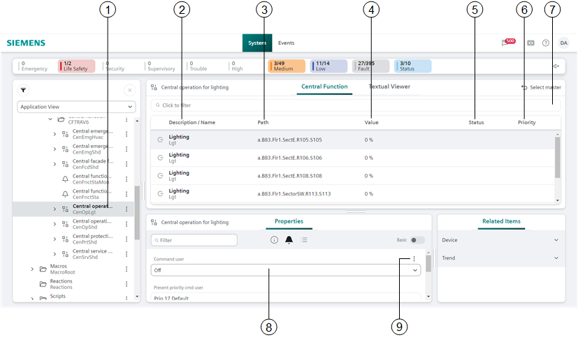

Central Function Workspace
Entire sections of a building can be easily controlled using the central function, including:
- Fire Department Emergency Functions
- Switching on Emergency Lighting
- Overriding Emergency Lighting Rest Operating Mode
- Controlling Ventilation
- Raising Blinds
- Standard Operation
- Switching Lights On and Off
- Blinds up and down
- Changing Room Occupancy Mode

Central Function Viewer | ||
| Name | Description |
1 |
| Displays the selected group object in the System Browser. |
2 | Description / Name | Displays the object's name. |
3 | Path | Displays the object's hierarchy structure. |
4 | Value | Displays the object's present value. |
5 | State | Displays the object's state. |
6 | Priority | Displays the presently pending BACnet priority for the object. Priorities can be displayed differently for each object. Objects with BACnet priority ≦ 7 cannot be switched. |
7 | Filters | Can be filtered by column and values. |
8 | Manual | Directly operate the object manually. |
9 | Auto | Automatically and manually operate the object. |